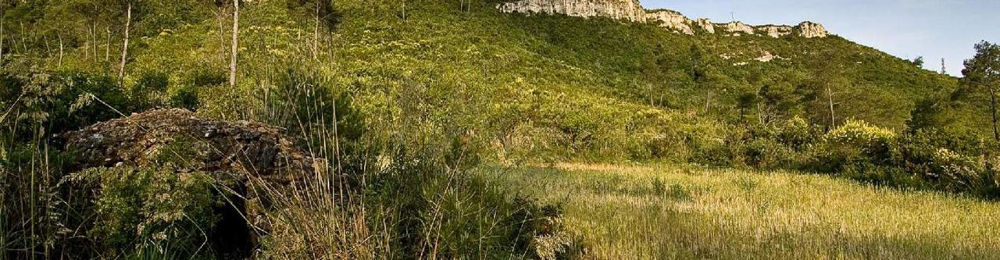

Ruta · Vallirana
Ruta circular que ens porta al punt més alt del municipi de Vallirana on gaudirem d' espectaculars vistes sobre el Baix Llobregat i Barcelona . La primera part serà una contínua ascensió fins al…